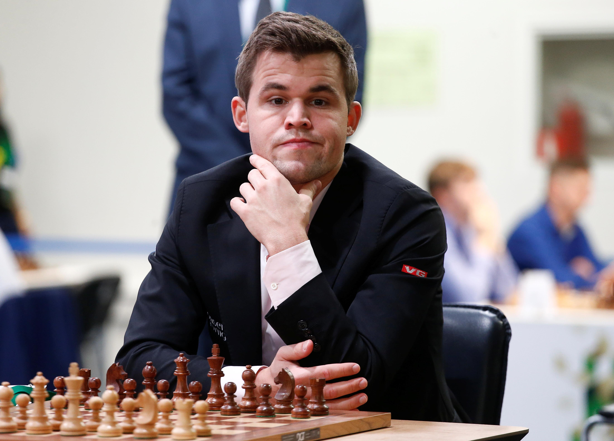
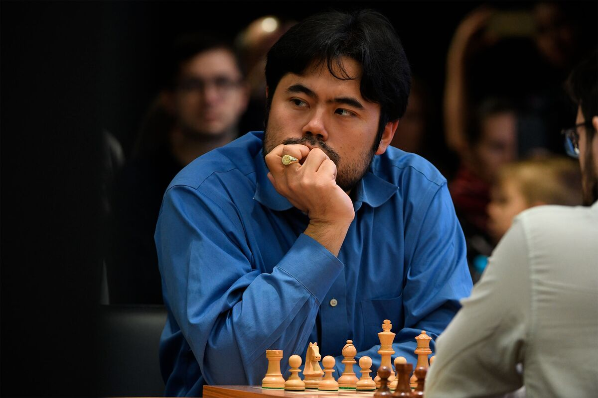
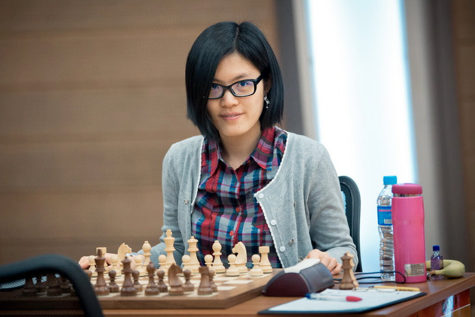

Top Chess Players
Magnus Carlsen
Magnus Carlsen is a Norwegian chess grandmaster and the current World Chess Champion. He has held the world title since 2013 and is known for his exceptional positional and endgame skills.
Hikaru Nakamura
Hikaru Nakamura is an American chess grandmaster. He is known for his aggressive and tactical playing style, as well as his exceptional skills in online and rapid chess. Nakamura has achieved numerous victories in prestigious chess tournaments.
Fabiano Caruana
Fabiano Caruana is an Italian-American chess grandmaster. He has consistently been one of the world's top players and is known for his strong opening preparation and versatile playing style.

Hou Yifan
Hou Yifan is a Chinese chess grandmaster and the strongest female chess player in the world. She has won multiple Women's World Chess Championships and has achieved remarkable success at a young age.
